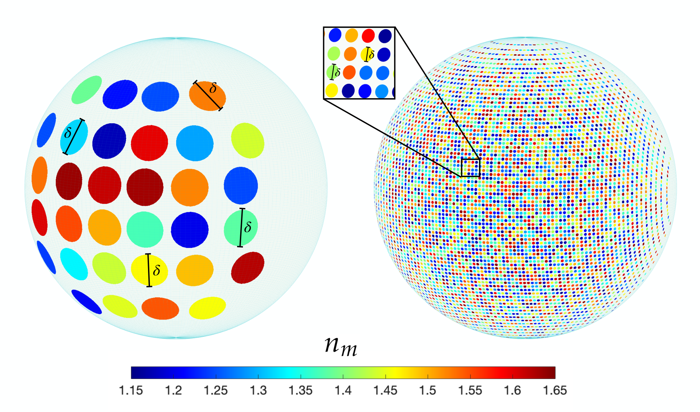
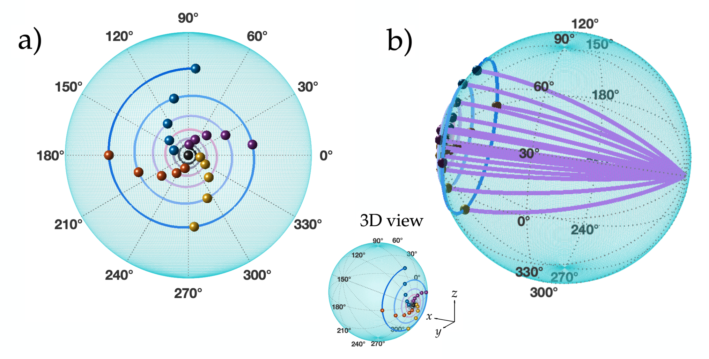
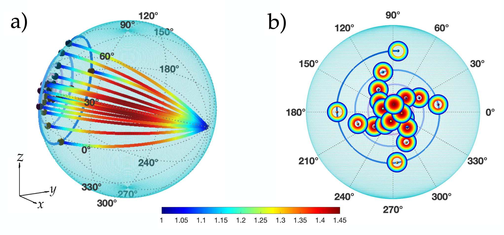
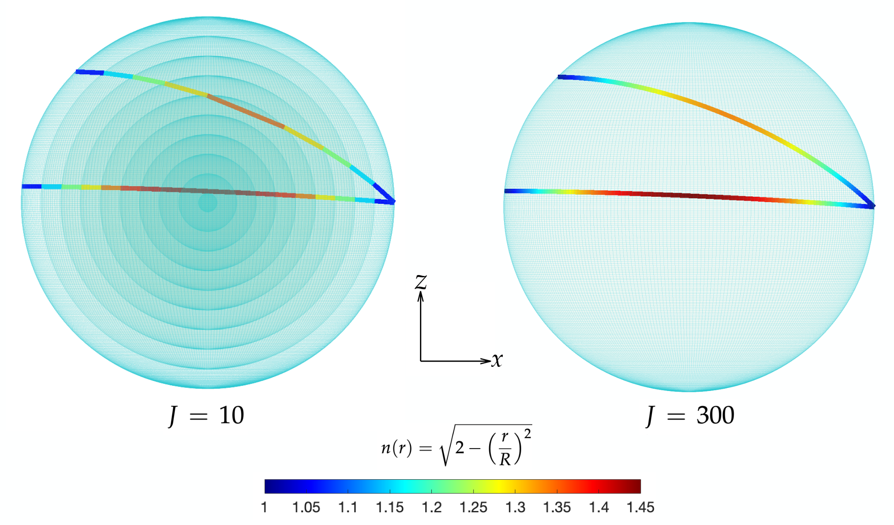
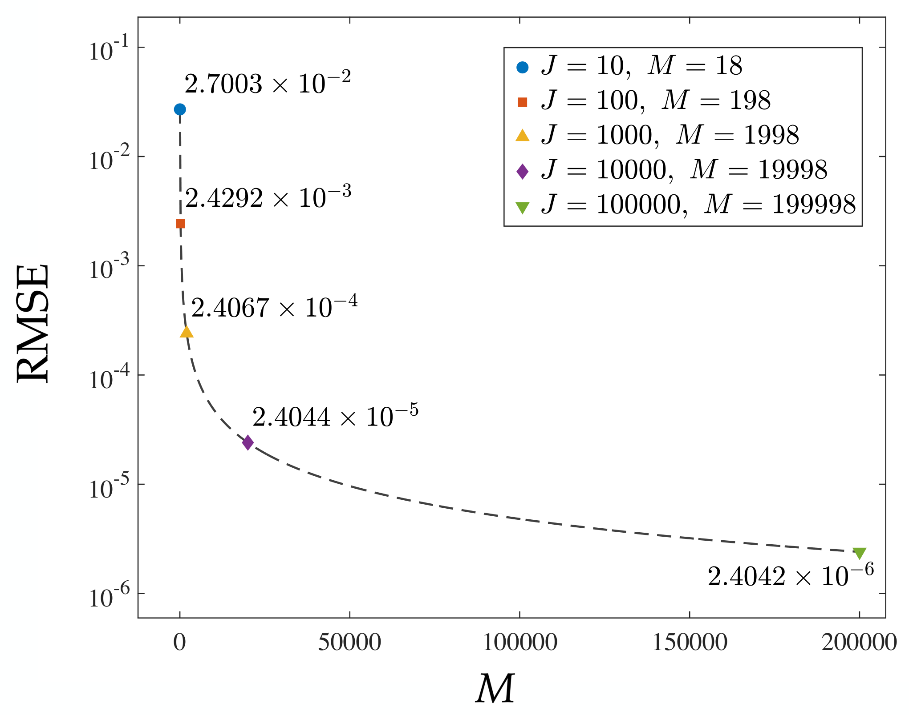
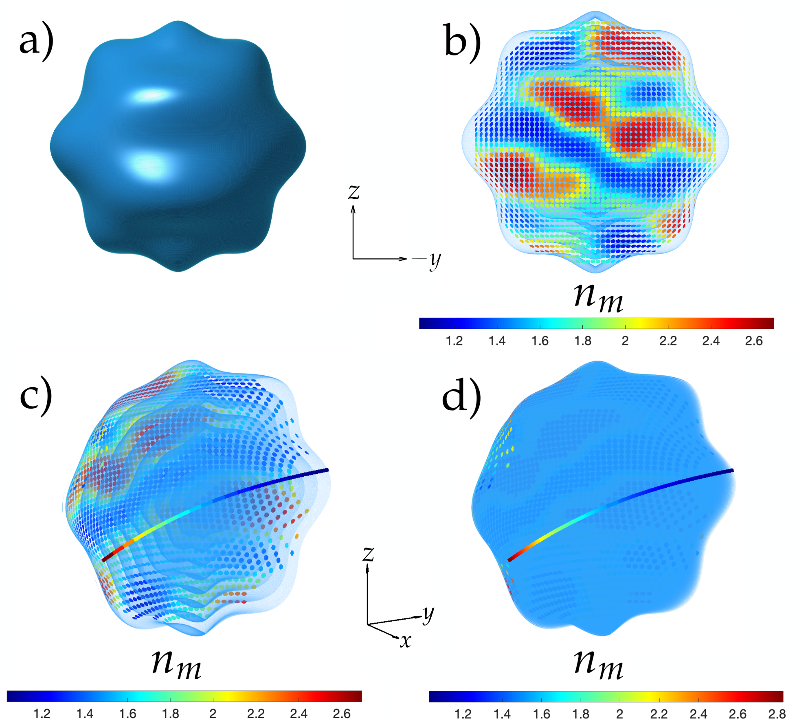
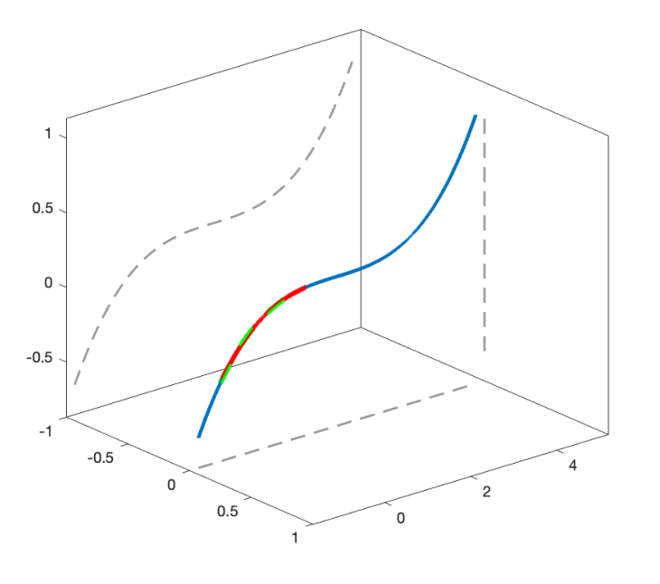
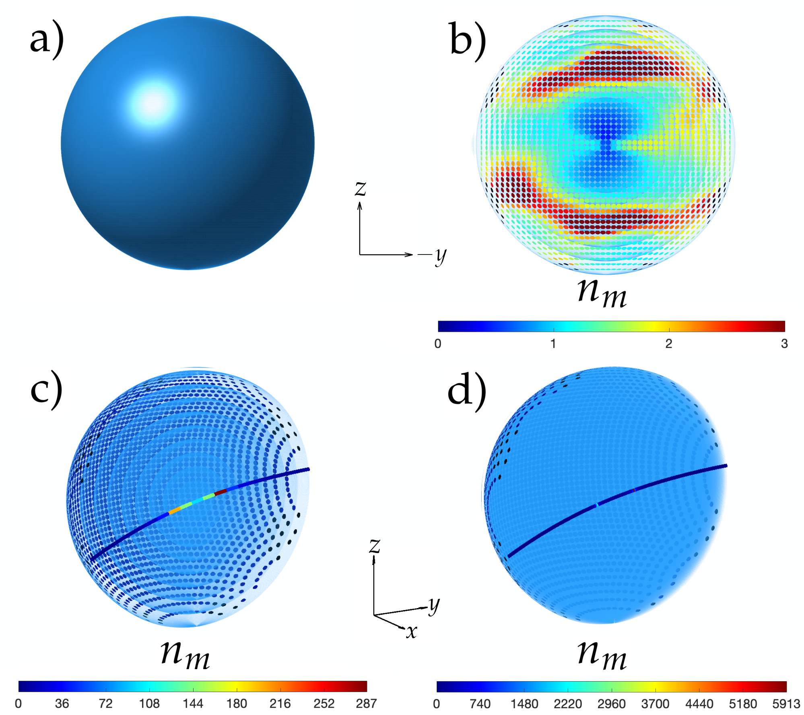
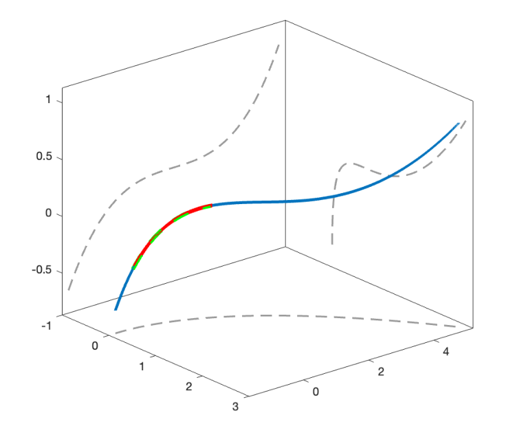
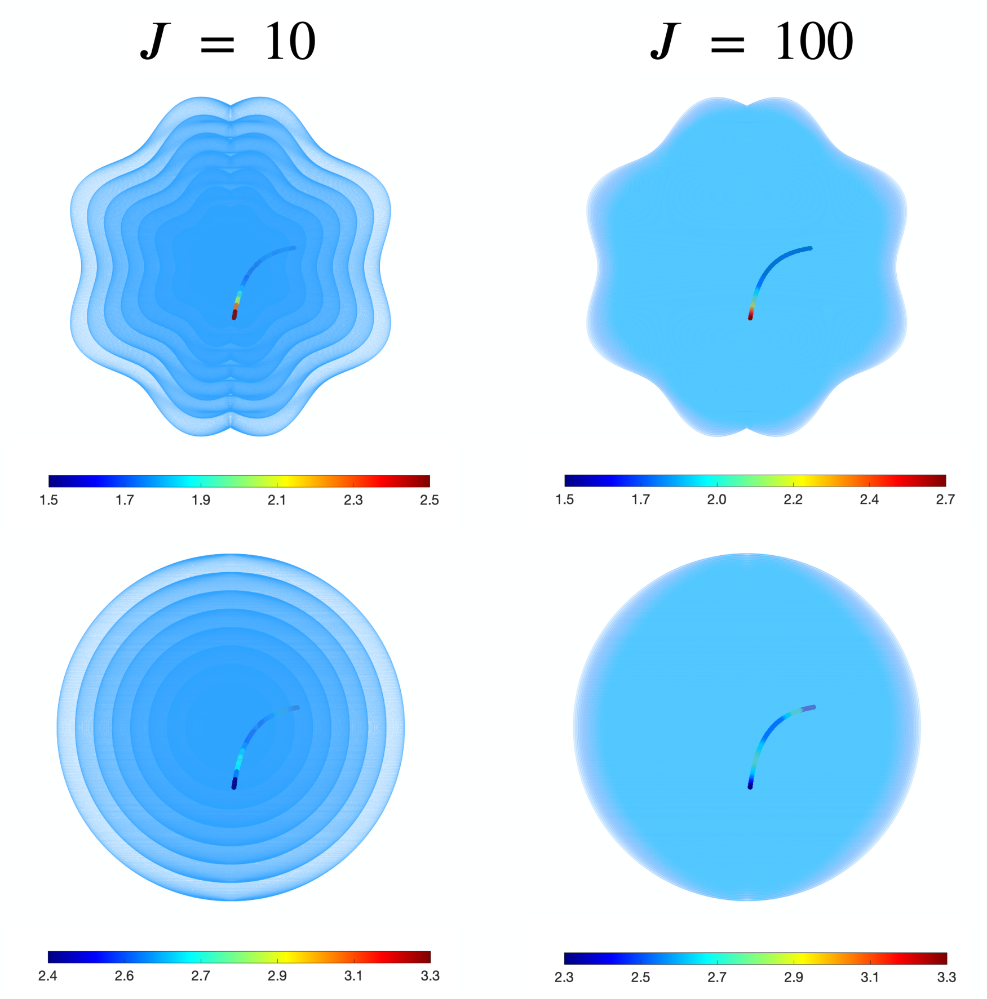

自由曲面梯度折射率介质重建
摘要
重建梯度折射率（GRIN）介质在于确定一种空间折射率分布，使其产生规定的光线轨迹，这是几何光学中的一个逆问题。以往方法利用几何对称性和守恒的光线量来处理这一逆问题。将重建扩展到自由曲面介质，需要不依赖这些对称性的方法。在此，我们提出一种三维逐点方法，通过局部折射的逆向应用来重建自由曲面 GRIN 介质。该方法不需要几何对称性、傍轴近似或等折射率面的先验知识，并且易于实现。使用两种界面几何结构进行重建表明，可由同一规定轨迹函数获得不同的折射率分布。因此，界面的选择为光学设计提供了额外的自由度，但受局部折射条件以及重叠重建区域之间兼容性的约束。
I 引言
梯度折射率（GRIN）介质的特征在于具有空间变化的折射率分布，该分布会在光传播过程中连续弯曲光线 [11, 13]。其内部结构可用等折射率面 [8] 来描述，即在非均匀光学介质内部的假想三维层，其中每一点具有相同的折射率。根据这些表面的几何结构，GRIN 介质可大致分为对称型和自由曲面型 [9]。在对称 GRIN 介质中，等折射率面表现出明确的几何对称性，如经典的轴向、圆柱和球面分布 [13]。相比之下，自由曲面 GRIN 介质的特征在于其等折射率面没有预定义对称性，从而使折射率能够在三维空间中任意变化 [14]。
在几何光学中，确定光线通过已知 GRIN 分布的轨迹构成正问题，并且已通过解析和数值方法得到广泛研究 [19, 20, 18, 23, 31, 27, 5, 16, 29, 30, 28, 8, 10, 7, 6]。相反，逆问题在于确定能够产生规定光线轨迹的折射率分布，并且仍是一个活跃的研究领域 [24, 22, 1, 2, 4, 3, 15, 25, 26, 9]。
早期方法推导出可产生规定二维光线路径的折射率分布，并表明不同的折射率分布可以支持同一规定轨迹，从而揭示了逆问题的非唯一性 [24]。
最近，提出了一种基于费马光线不变量的对称 GRIN 介质重建方法 [9]。这些守恒量源于几何对称性，可解释为 Snell 定律的广义形式 [8, 10]，使得能够沿指定轨迹恢复折射率而无需积分光线微分方程。该方法为自由曲面重建提供了物理联系：尽管相应的基于对称性的不变量通常不可用，但重建所依据的局部折射定律仍然适用。
本文采用逐点重建方法处理三维自由曲面 GRIN 介质的逆问题。所提方法既不需要几何对称性，也不需要傍轴近似或等折射率曲面的先验知识。其实现依赖于简单局部折射关系的逐次应用，而无需积分光线微分方程。我们展示了逆问题的非唯一性如何通过重建界面的选择体现出来：对于同一指定轨迹，不同的界面几何可产生不同的折射率分布。这种几何灵活性为定制重建分布提供了额外自由度，但需满足局部折射条件。
II 重建方法
重建从指定光线轨迹和几何已知的选定曲面族出发。重建的折射率分布取决于这一选择，因为曲面决定了沿指定轨迹的交点和局部法线。这些交点将轨迹划分为连续线段，并将其近似为由局部折射事件连接的直线传播路径。在每个交点处，相邻线段的方向和曲面法线提供了通过 Snell 定律恢复折射率比所需的几何信息。从已知的输入折射率出发，逐次应用该关系，以构建沿指定轨迹的介质分段均匀表示。
设 表示给定的光线轨迹，其中 表示轨迹参数；并设 为选定的一族重建界面，其中 为界面总数，见图 1。这些界面规定了施加局部折射条件的几何位置，且不限于等折射率面：折射率在每条光线与界面的交点处局部恢复，并可在给定界面内变化。每个界面由参数曲面描述
| (1) |
其中 和 为曲面参数，、 和 为第 个界面的笛卡尔坐标。
给定轨迹与重建界面相交于点
| (2) |
其中 是沿光线的第 个交点， 是对应的轨迹参数， 标识在该点穿过的界面。参数 确定 在该界面上的位置。交点沿传播方向按 递增的顺序排列。因此， 标记相继的交点，而 标记重建界面。这一区别允许同一界面被穿过不止一次，且每次穿过都被赋予不同的 值。
在每个交点 处，局部单位法线由界面参数化计算为
| (3) |
其中记号 表示 对 的偏导数。 相邻轨迹段定义入射单位向量和透射单位向量，
| (4) |
这些向量与 一起通过下式确定入射角和透射角
| (5) |

为使这些方向描述一条透射光线，它们必须满足局部矢量折射条件：入射方向、透射方向和界面法线必须共面，两个方向的切向分量必须具有相同取向，且它们的法向分量必须对应于跨界面传播。一旦满足这些条件，斯涅尔定律给出所需的折射率 （对应 处）：
| (6) |
其中是紧邻交点之前的折射率，对应于从延伸到的线段。相邻界面上的直径为的圆盘定义了该线段所穿过的局部均匀药丸盒形区域。每个圆盘定义为界面局部切平面内的一个圆，与表面几何形状和光线入射角无关。参数可调，以控制局部折射率赋值的横向范围。界面限定该区域的纵向范围，该局部体积内的所有点均被赋予相同的折射率值。这种基于药丸盒的赋值避免在整个层上施加均匀折射率，并允许将光学元件的不同区域定制为不同的指定轨迹，前提是在局部体积重叠的任何位置所赋的折射率值相等。图2给出了取较大值和较小值时重建的区域。
III 重建精度
为评估重建精度，我们考虑一个 Luneburg 透镜[17]，其折射率分布和光线轨迹均具有解析已知形式[17, 12]。虽然该透镜具有球对称性，但它提供了一个明确定义的基准：解析轨迹作为重建方法的输入，恢复的折射率可直接与精确分布进行比较。其折射率分布由[17]给出。
| (7) |
其中是由透镜半径归一化的径向坐标，原点位于透镜中心。透镜内部的光线轨迹由[12]解析描述。
| (8) |
其中，且 是光线在其传播平面内的入射点。

在量化重建精度之前，我们首先使用20条指定光线轨迹来演示该方法，这些光线的入射点沿前半球表面上的指数螺旋分布，如图3(a)所示。这种布置同时改变距光轴的径向距离和方位角，使相继的入射点逐渐更靠近轴，同时避免径向位置重复[21]。因此，所选光线以有限数量的轨迹采样距透镜轴不同距离和不同方位角的入射点。相应的解析轨迹各自位于其各自的子午平面内，如图3(b)所示。

在该重建中，我们使用 个同心球形界面作为指定的表面族，这与 Luneburg 透镜已知的球对称性一致。重建从球形透镜表面开始，初始折射率为 ，因为 Luneburg 折射率在透镜边界处与周围介质相匹配，并归一化到该值。图 4(a) 显示了沿每条指定轨迹重建的折射率。如图 4(b) 所示，重建的径向范围取决于轨迹接近透镜中心的程度。越靠近光轴入射的光线穿过越多同心界面，从而在更宽的径向区间内恢复折射率。边缘光线相交的界面较少，仅能恢复折射率分布的外部区域。这两种情况均在图 5 的左图中示出。

对于给定轨迹，重建还取决于界面数量 ，如图 5 所示。增大 可细化光线所穿过区域内的径向采样，但不会扩展该轨迹可及的径向区间。因此，轨迹决定重建区域的范围，而界面密度控制用于恢复折射率分布的离散化程度。
对于 Luneburg 透镜中的轴上光线，入射和透射均垂直于同心球形界面，因此两个角度均为零，式 (6) 变为不定式。无论折射率取何值，该光线穿过界面时均不发生角度偏转，因此仅凭其轨迹无法恢复折射率。因此，轴上光线被排除在重建精度评估之外。
由于越靠近透镜中心的光线可在越宽的径向区间内恢复折射率，我们选择入射点距光轴归一化径向距离最小的非轴向光线，，用于定量精度评估。重建误差采用均方根误差进行评估，
| (9) |
其中是重构样本索引的最大值，是恢复的折射率，是在相应径向位置处利用式(7)计算得到的解析折射率。

图6给出了RMSE随的变化，其中重构界面数不断增加。误差从（对应，即）单调降至（对应，即），降幅略大于四个数量级。对于更细的离散化，每增加十倍，RMSE约降低十倍，与该测试的一阶收敛一致。在评估范围内未观察到误差平台，表明继续细化仍能改善解析折射率分布的重构。
IV 自由曲面GRIN重构
在利用Luneburg透镜评估了重构精度之后，我们现在考虑一条折射率分布未知的指定轨迹。我们采用具有不同几何形状的两类重构界面来应用该方法，以考察这一选择如何影响恢复的折射率分布及其物理实现的适用性。这些界面并不受限于等折射率面，因此折射率可在每个界面内变化。我们首先考虑由下式定义的一类界面
| (10) |
其中、、、和。整数标记各界面，而指定它们相对于最外层表面的尺度，该最外层表面由定义。因此，尺度因子定义了一族由该表面界定的嵌套界面。图7(a)给出了沿轴观察（投影到–平面）的最外层界面，显示了介质的外部形状。我们将入射光线分布在整个介质的横向范围内，确保它们的交点采样到最外层界面的被照明部分。

一组1876条平行光线表示沿方向传播的入射平面波前，分布在图7(a)所示介质的整个横向范围内。周围介质的折射率为，这为重建提供了初始条件。为演示单个界面上折射率的局部恢复，我们以最外层表面为例，并在每个光线-界面交点处随机指定透射方向，但需满足局部折射条件。相应的折射率值由式(6)计算，并赋给横向范围由控制的局部区域。图7(b)显示了该界面上的所得折射率分布。
迄今为止所给出的重建仅限于单个界面。为说明重建如何穿过连续界面进行，我们考虑一条具有指定轨迹的单一光线
| (11) |
图8显示了在上的指定轨迹，其中用于重建的区间以红色突出显示。该光线最初平行于轴，并在处进入介质。

使用这一指定轨迹，我们针对同一界面族的两种离散化重建折射率分布：和，分别如图7(c)和图7(d)所示。在两种情况下，折射率沿光线路径依次恢复，并赋给其周围的局部区域。增加界面数量可细化介质的分段均匀表示，使传播段能够更紧密地跟随。对于，恢复的折射率值范围为至；对于，范围为至。每个界面上的颜色表示横向范围由控制的区域内的局部折射率赋值，而不在整个界面上施加均匀折射率。

为了说明界面选择对于物理实现的重要性，我们特意考虑第二种几何结构，其在最外层界面上得到的折射率小于1，而沿给定轨迹的折射率值非常大。该示例突出了需要将重建界面与给定光线方向一起选择，以获得处于期望范围内的折射率。我们在式(10)中设置，得到一族同心球面界面。图9(a)给出了最外层界面。为了重建该表面上的折射率分布，我们使用同一组1876条表示平面波前的平行入射光线，以及与前一示例相同的给定透射方向，并保持和不变。尽管入射方向和透射方向保持不变，新的界面法线会同时改变入射角和透射角。
因此，必须在每个光线–界面交点处重新检查局部折射条件。改变界面几何形状可能使局部法线位于由给定入射方向和透射方向所确定的平面之外，从而违反共面条件。在这些点处，对于各向同性介质，在 Snell 定律下不存在任何标量折射率能够重现给定的透射方向。这些点在图 9(b) 中以黑色示出，表示此处未赋予折射率值。凡是满足局部折射条件的位置，均使用式 (6) 反演折射率。为便于可视化，图 9(b) 中的色标上限设为 ，所有更高值均用同一上限颜色表示。这可防止最大的反演折射率掩盖较低值处的变化，且不会改变所计算的折射率。
恢复得到的值中包含小于 1 的折射率。在 下，对于可允许的折射事件，只要透射角超过入射角，就会出现这些值。因此，在保持指定光线方向不变的情况下改变界面几何结构，既会影响恢复得到的折射率值，也会影响重建可允许的位置。该结果突出表明，在寻求位于期望折射率范围内的分布时，需要同时考虑界面几何结构和指定光线方向。折射率在该球面界面上的变化还强调，重建表面的几何结构并不会对恢复得到的分布施加球对称性。
随后，我们保留指定的轨迹函数 来重建介质内部的折射率。外边界的变化改变了该轨迹包含在介质内的部分，这部分现在对应于 ，入射光线在 处进入。因此，轨迹函数保持不变，但其入射点和出射点由新边界决定。相应的区间 由图 8 中的绿色虚线段表示。
图 9(c) 和图 9(d) 分别示出了 和 的重建结果。恢复得到的折射率值范围为 至 （对应 ），以及 至 （对应 ），均大幅超过用先前界面族获得的值。改变界面几何结构会改变沿指定轨迹的交点和局部法线，从而改变相继交点处所需的折射角和折射率比。因此，尽管所得分布是由同一轨迹函数重建的，它们仍会不同。
采用球面界面时得到的大折射率出现在透射段几乎与局部法线对齐的重建步骤中。在这些交点处， 变小，而 没有成比例减小，从而在式 (6) 中产生很大的折射率比。改变 会改变交点位置以及相邻段的方向，因而也会改变透射段与法线的对齐程度。这解释了在两种球面离散化之间最大恢复折射率的显著增加。由于重建是递归的，这些局部比值也会影响后续的折射率值。因此，界面几何结构及其离散化都会影响复现指定轨迹所需的折射率。

迄今为止考虑的轨迹位于 平面内。为了将这些示例扩展到非平面路径，我们在其 坐标中引入一个二次项，同时保留式 (11) 中 和 的表达式：
| (12) |
该轨迹不包含在单一平面内，如图 10 所示，范围为 。用于重建的区间对于第一类界面族为 ，对于同心球面界面为 ，分别显示为红色实线段和绿色虚线段。
我们使用两个界面族以及两种离散化 和 应用相同的重建过程。对于每种几何结构，重新计算光线-界面交点和相邻线段方向，并由外边界确定轨迹位于介质内的部分。

V 折射率兼容性
前面的示例沿各个指定轨迹局部重建折射率。将若干此类重建组合到单一光学介质中，要求它们的局部折射率赋值相容。尽管不同界面几何结构可能对同一轨迹产生不同分布，但在固定波长下，任何单个各向同性介质内的折射率必须是位置的単值函数。该要求确保重建介质内的一致性，但不意味着逆解的唯一性。
考虑两条指定轨迹，它们在局部均匀区域内的一点 相交。它们独立恢复的折射率值必须满足
| (13) |
其中上标用于标识两种重建。轨迹可以以不同传播方向相交，但不能要求在同一位置具有不同的折射率值。相互冲突的赋值会妨碍在所选条件下直接组合这些重建，并且需要修正界面几何、预设轨迹或初始条件。
由于每个恢复值被赋予一个有限局部体积，因此在重建区域重叠的任何位置也必须满足兼容性，即使光线轨迹本身并不相交。将两种重建对应的区域分别记为和，该条件变为
| (14) |
因此，参数同时控制重建的横向范围和局部赋值之间的重叠。减小可能消除空间分离轨迹之间的重叠，但无法解决实际光线交点处相互冲突的折射率要求。
这些条件确保局部折射率赋值的一致性。实际设计还可能施加一个容许范围，其由可用材料和工作波长决定。必须将这些边界纳入重建约束，因为简单替换该范围之外的恢复值通常会改变预设光线轨迹。
VI 讨论
结果表明，重建界面的选择如何为从预设光线轨迹恢复折射率分布提供几何自由度。在保持相同轨迹函数的情况下，从第一种界面几何改为同心球面界面，会产生不同的局部折射率赋值。这种依赖性反映了逆问题的非唯一性，并使界面几何成为重建过程中的一项设计选择。此外，球面重建界面不一定产生球对称分布，因为恢复的折射率可能在各球面层内变化。
这种几何自由度受局部折射条件的约束。当入射方向和透射方向保持不变时，改变界面法线会改变它们的相对取向，并可能影响在给定交点处是否存在容许的重建。图9(b)中的黑点标识了不满足这些条件且未赋予折射率的位置。在容许交点处，几何变化还可能产生小于1的折射率值，正如在球面界面中观察到的那样。这些结果表明，必须将界面几何和预设光线方向一起考虑，以便既满足折射条件，又获得处于期望折射率范围内的值。
Luneburg 基准表明，细化重构界面可改善与解析折射率分布的一致性，在所考察的更细离散化下具有约一阶收敛性。在该测试中，界面遵循参考分布的已知球对称性。对于第 4 节中考虑的两个界面几何结构，由于未给定参考分布，增加界面数量会改变轨迹的采样以及重构中使用的局部折射角。因此，更细的离散化本身并不能确保恢复的折射率保持在适合特定应用的范围内。在采用球形界面时沿所选轨迹获得的大数值强调了需要将离散化与界面几何结构和折射率约束一起考虑。
该方法重构给定轨迹周围的局部区域。如第 5 节所述，要将这些区域组合成单一光学介质，就需要在它们重叠的任何位置给出一致的折射率赋值。实际应用还可能要求恢复的折射率位于可接受范围内。这些界限约束了重构界面和给定轨迹的选择，因为简单替换期望范围之外的值通常会改变折射条件，并因此改变所得光线路径。
非平面示例进一步说明了这种联合依赖性：同一类球形界面在平面轨迹下会产生非常大的折射率，而当给定路径改变时则会产生低得多的数值。因此，评估某界面几何结构是否适合物理实现时，必须结合其旨在再现的轨迹来进行。
VII 结论
我们提出了一种逐点方法，通过局部折射的逆应用，从给定光线轨迹重构梯度折射率介质。该公式适用于三维几何结构，二维重构是其特例，并且既不需要几何对称性，也不需要等折射率面的先验知识。一个关键优势是其实现直接：每个重构步骤利用相邻光线方向和局部界面法线，通过简单的代数关系恢复折射率，而无需对光线微分方程进行积分。Luneburg 透镜基准表明其与解析折射率分布一致，对于所考察的更细离散化具有约一阶收敛性。
两种界面几何结构之间的比较表明，可以从同一预设轨迹函数中恢复出不同的折射率分布。因此，重建界面为光学设计提供了额外的自由度，但受局部折射条件的约束。在寻求期望的折射率范围时，必须综合考虑其几何结构、预设轨迹和离散化。对于多条轨迹，在重建区域重叠处，局部赋值也必须保持一致。在这些约束下，该方法为对称和自由形式 GRIN 介质的局部重建提供了一个易于实现的框架。
CRediT 作者贡献声明
V. Chávez-Islas： 形式分析、研究、方法学、软件、可视化、写作—初稿。 F. H. Maldonado-Villamizar： 形式分析、研究、方法学、可视化、写作—初稿。 E. Espíndola-Ramos： 形式分析、研究、方法学、可视化、写作—初稿。 S. Chávez- Cerda： 研究、方法学、监督、验证、可视化、写作—初稿。 J. E. Gómez-Correa： 概念化、形式分析、研究、方法学、项目管理、监督、验证、可视化、写作—初稿。
致谢
第一作者和第三作者感谢 Secretaría de Ciencia, Humanidades, Tecnología e Innovación（SECIHTI）通过授予的奖学金（VCI: 1348421；EER: 640385）提供的支持。FHMV 也感谢 SECIHTI 通过项目 IIxM 7309（CIR/072/2024）给予的支持。
数据可用性
本文所述研究未使用数据。
利益冲突声明
作者声明，他们不存在任何可能影响本文工作的已知竞争性经济利益或个人关系。
References
- [1] (2004) A two-dimensional inverse problem of geometrical optics. Journal of Physics A: Mathematical and General 38 (1), pp. 175. External Links: Document, Link Cited by: §I.
- [2] (2006) Two solvable problems of planar geometrical optics. J. Opt. Soc. Am. A 23 (12), pp. 3133–3138. External Links: Link, Document Cited by: §I.
- [3] (2016) Three-dimensional inverse problem of geometrical optics: a mathematical comparison between Fermat’s principle and the eikonal equation. J. Opt. Soc. Am. A 33 (9), pp. 1710–1722. External Links: Link, Document Cited by: §I.
- [4] (2011) Refractive-index distributions generating as light rays a given family of curves lying on a surface. J. Opt. Soc. Am. A 28 (2), pp. 278–283. External Links: Link, Document Cited by: §I.
- [5] (1973) Rays in gradient-index media: separable systems. J. Opt. Soc. Am. 63 (1), pp. 46–49. External Links: Link, Document Cited by: §I.
- [6] (2026) Generalized vectorial ray tracing for optical analysis and design in freeform gradient-index media. arXiv preprint arXiv:2606.22655. Cited by: §I.
- [7] (2025) Ray tracing method beyond idealized gradient-index lenses. Opt. Express 33 (26), pp. 54867–54878. External Links: Link, Document Cited by: §I.
- [8] (2021) Generalization of ray tracing in symmetric gradient-index media by fermat’s ray invariants. Opt. Express 29 (21), pp. 33009–33026. External Links: Link, Document Cited by: §I, §I, §I.
- [9] (2023) Symmetric gradient-index media reconstruction. Optics Express 31 (18), pp. 29196–29212. Cited by: §I, §I, §I.
- [10] (2022) Geometrical-light-propagation in non-normalized symmetric gradient-index media. Opt. Express 30 (19), pp. 33896–33910. External Links: Link, Document Cited by: §I, §I.
- [11] (2002) Gradient-index optics: fundamentals and applications. Springer. Cited by: §I.
- [12] (2005) Focusing properties of a three-parameter class of oblate, Luneburg-like inhomogeneous lenses. Journal of Electromagnetic Waves and Applications 19 (8), pp. 1005–1019. External Links: Document, Link Cited by: §III, §III.
- [13] (2002) Lagrangian optics. Springer. Cited by: §I.
- [14] (2021) Freeform gradient-index media: a new frontier in freeform optics. Opt. Express 29 (22), pp. 36997–37012. External Links: Link, Document Cited by: §I.
- [15] (2019) Manipulating light trace in a gradient-refractive-index medium: a Lagrangian optics method. Opt. Express 27 (4), pp. 4714–4726. External Links: Link, Document Cited by: §I.
- [16] (2023) Analytical ray tracing based on hamilton principal function and conjugate variable pairs. J. Opt. Soc. Am. A 40 (1), pp. 78–84. External Links: Link, Document Cited by: §I.
- [17] (1964) Mathematical theory of optics. University of California. Cited by: §III.
- [18] (1972) Ray tracing in cylindrical gradient-index media. Appl. Opt. 11 (5), pp. 1104–1106. External Links: Link, Document Cited by: §I.
- [19] (1970) Ray tracing in gradient-index media. J. Opt. Soc. Am. 60 (1), pp. 1–7. External Links: Link, Document Cited by: §I.
- [20] (1988) Rapid ray tracing in radial gradients. Appl. Opt. 27 (3), pp. 465–467. External Links: Link, Document Cited by: §I.
- [21] (2012) Wide two-dimensional field laser ray-tracing aberrometer. Journal of Vision 12 (2), pp. 2–2. External Links: ISSN 1534-7362, Document, Link Cited by: §III.
- [22] (1985) Refractive-index distribution in two-dimensional geometry for a given one-parameter manifold of rays. J. Opt. Soc. Am. A 2 (11), pp. 1821–1825. External Links: Link, Document Cited by: §I.
- [23] (1975) Ray tracing in gradient-index media. J. Opt. Soc. Am. 65 (4), pp. 451–455. External Links: Link, Document Cited by: §I.
- [24] (1979) Refractive-index distribution for a prescribed ray path. J. Opt. Soc. Am. 69 (3), pp. 450–454. External Links: Link, Document Cited by: §I, §I.
- [25] (2021) Neural network gradient-index mapping. OSA Continuum 4 (10), pp. 2543–2551. External Links: Link, Document Cited by: §I.
- [26] (2023) Design method of gradient-index optics in homogeneous medium using neural network gradient-index mapping. Optical Review (), pp. 1–6. External Links: Document Cited by: §I.
- [27] (1971) Analytic solution of ray equations in cylindrically inhomogeneous guiding media. part 2: skew rays. Appl. Opt. 10 (5), pp. 1164–1171. External Links: Link, Document Cited by: §I.
- [28] (1987) Ray trace algorithms for GRIN media. Appl. Opt. 26 (15), pp. 2943–2946. External Links: Link, Document Cited by: §I.
- [29] (1982) Tracing rays through graded-index media: a new method. Appl. Opt. 21 (6), pp. 984–987. External Links: Link, Document Cited by: §I.
- [30] (1985) Computing optical path length in gradient-index media: a fast and accurate method. Appl. Opt. 24 (24), pp. 4367–4370. External Links: Link, Document Cited by: §I.
- [31] (1971) Analytic solution of ray equations in cylindrically inhomogeneous guiding media. 1: meridional rays. Appl. Opt. 10 (4), pp. 769–775. External Links: Link, Document Cited by: §I.